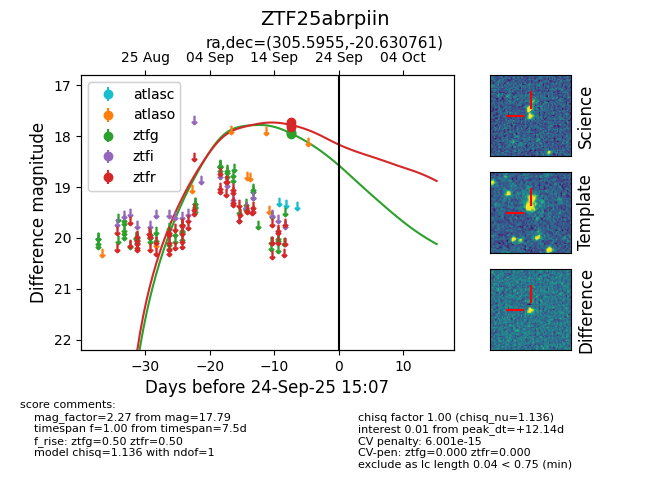
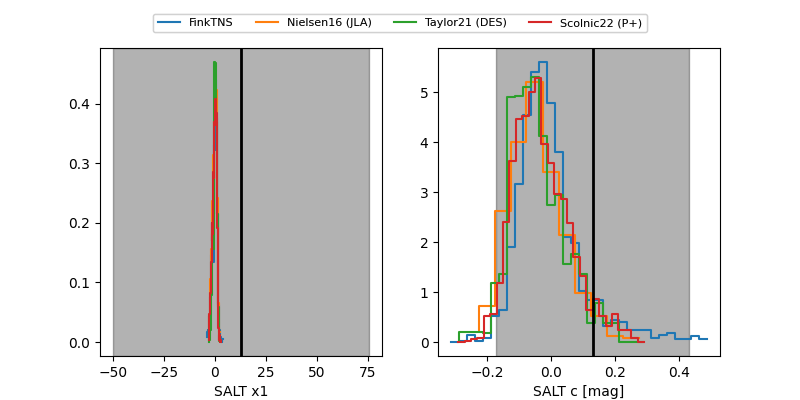

FINK: ZTF25abrpiin
Lasair: ZTF25abrpiin
ALeRCE: ZTF25abrpiin
ZTF25abrpiin (ztf,fink)
equatorial (ra, dec) = (305.5955,-20.63076)
galactic (l, b) = (23.1602,-28.85352)


last ztfg=17.95, ztfr=17.79
3 ztfg, 3 ztfr detections